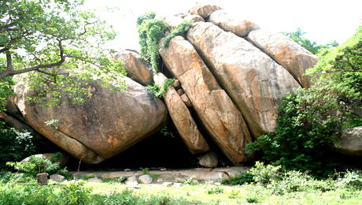
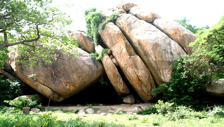

North East
The North East (often hyphenated to the North-East) is the one of the six geopolitical zones of Nigeria representing both a geographic and political region of the country's northeast.
- Bauchi
- Taraba
- Yobe
- Borno
- Adamawa
- Benin Republic


The North East (often hyphenated to the North-East) is the one of the six geopolitical zones of Nigeria representing both a geographic and political region of the country's northeast.
The North Central (often hyphenated to the North-Central) is the one of the six geopolitical zones of Nigeria representing the majority of the country's Middle Belt.


The North West (often hyphenated to the North-West) is the one of the six geopolitical zones of Nigeria representing both a geographic and political region of the country's northwest.

The South West (often hyphenated to the South-West) is the one of the six geopolitical zones of Nigeria representing both a geographic and political region of the country's southwest.
 

The South South (often hyphenated to the South-South) is one of the six geopolitical zones of Nigeria representing both a geographic and political region of the country's eastern coast.

The South East (often written as South-East) is the one of the six geopolitical zones of Nigeria representing both a geographic and political region of the country's inland southeast.